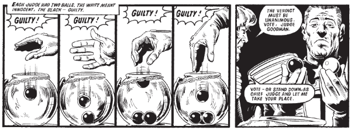

Chief Judge Clarence Goodman (following Solomon) was murdered (by SJS Judges) in the coup that saw Cal take power.
Art by Brian Bolland
| Story Title | Parts | Pages | w indicates a wraparound coverCovers | Year(s) | Issues | Writer | Artist | Colourist | Letterer |
|---|---|---|---|---|---|---|---|---|---|
From Judge Dredd[Judge Whitey] | 1 | 5 | 0 | 1977 | Reprints: JDA'82 723 (supplement) FCBD7‑QR http://content.2000adonline.com/FCBD2017/JudgeWhitey.pdf2 | Peter Harris | Carlos Ezquerra Mike McMahonvarious | <-- p5, [b&w] | McGowan |
From Judge Dredd Featuring Call‑Me‑Kenneth.[Robot Wars] | 8 | 40.5 | 10: Carlos Ezquerra 1 | 1977 | Reprints: JDA'86 (partial)10-17 | John Wagner | 1: Carlos Ezquerra 2,4,7: Ron Turner 3,6: Mike McMahon 5,8: Ian Gibson various | <-- 3pp, [b&w] | 1,5: John Aldrich 2: Bill Nuttall 3,4,6: Jack Potter 7: Tony Jacob 8: Peter Knight various |
From Judge DreddThe Judges' Graveyard | 1 | 6 | 0 | 1977 | SFS0 | unknown | Kevin O'Neill | [b&w] | unknown |
From Judge Dredd[The Comic Pusher] | 1 | 4 | 0 | 1977 | Reprints: JDA'8320 | John Wagner | Mike McMahon | [b&w] | Bill Nuttall |
From Judge Dredd[The Solar Sniper] | 1 | 5 | 0 | 1977 | 21 | Gerry Finley-Day | Ron Turner | <-- p5, [b&w] | Jack Potter |
From Judge Dredd | [Judge Caligula]Crime and Punishment | 1 | 6 | 0 | 1978 | 86 | John Wagner | Brian Bolland | [b&w] | Tom Frame |
From Judge Dredd Featuring: ‑ Judge‑Tutor Pepper ‑ FergeeThe Day the Law Died | 20 | 116.5 | 89: Mike McMahon 94: Mike McMahon 98: Brian Bolland 105: Brian Bolland4 | 1978-1979 | 89-108 | John Wagner | Mike McMahon: 1‑3, 8‑9, 11‑12 Brett Ewins: 4, 5(P), 17(P) Brendan McCarthy: 5(I), 17(I) Brian Bolland: 6‑7(P), 10, 13‑14 Garry Leach: 6‑7(I), 15 Ron Smith: 16, 18‑20various | [b&w] | Tom Frame: 1‑2, 5‑20 Tom Knight: 3 Jack Potter: 4 various |
From Judge DreddMonkey on My Back | 3 | 45 | M204: John Higgins 1 | 2003 | M204-M206 | Garth Ennis | John Higgins | <-- | Tom Frame |
From Judge Dredd Featuring: ‑ The Fargo Clan ‑ Judge SolomonOrigins [part 1] | 17 | 96 | 1505: Brian Bolland 1510: John Higgins 1512: Rufus Dayglo 1514 [w]: Simon Coleby and Chris Blythe 1518: Mark Harrison 4,1w | 2006-2007 | 1505-1517, p2007, 1518-1519 | John Wagner | Carlos Ezquerra | <-- | Annie Parkhouse |
From Judge Dredd Featuring: ‑ The Fargo Clan ‑ Judge SolomonOrigins [part 2] | 7 | 43 | 1529: Cliff Robinson 1532: Boo Cook 2 | 2007 | 1529-1535 | John Wagner | Carlos Ezquerra | <-- | Annie Parkhouse |
From Judge Dredd Part of the Every Empire Falls arc. Preceded by: ‑ The Lion's Den in the prog. ‑ Dust to Dust in the Meg.From the Ashes | 1 | 10 | 0 | 2016 | M374 | Michael Carroll | Carlos Ezquerra | <-- | Annie Parkhouse |
From Judge DreddThe Dead Chief Judges' Society | 1 | 6 | David Millgate 1 | 2022 | 2267 | Kenneth Niemand | Rob Richardson | <-- | Annie Parkhouse |
| year | episodes | pages |
| 1977 | 12 | 60.5 |
| 1978 | 6 | 36 |
| 1979 | 15 | 86.5 |
| 1980 | 0 | 0 |
| 1981 | 0 | 0 |
| 1982 | 0 | 0 |
| 1983 | 0 | 0 |
| 1984 | 0 | 0 |
| 1985 | 0 | 0 |
| 1986 | 0 | 0 |
| 1987 | 0 | 0 |
| 1988 | 0 | 0 |
| 1989 | 0 | 0 |
| 1990 | 0 | 0 |
| 1991 | 0 | 0 |
| 1992 | 0 | 0 |
| 1993 | 0 | 0 |
| 1994 | 0 | 0 |
| 1995 | 0 | 0 |
| 1996 | 0 | 0 |
| 1997 | 0 | 0 |
| 1998 | 0 | 0 |
| 1999 | 0 | 0 |
| 2000 | 0 | 0 |
| 2001 | 0 | 0 |
| 2002 | 0 | 0 |
| 2003 | 3 | 45 |
| 2004 | 0 | 0 |
| 2005 | 0 | 0 |
| 2006 | 15 | 84 |
| 2007 | 9 | 55 |
| 2008 | 0 | 0 |
| 2009 | 0 | 0 |
| 2010 | 0 | 0 |
| 2011 | 0 | 0 |
| 2012 | 0 | 0 |
| 2013 | 0 | 0 |
| 2014 | 0 | 0 |
| 2015 | 0 | 0 |
| 2016 | 1 | 10 |
| 2017 | 0 | 0 |
| 2018 | 0 | 0 |
| 2019 | 0 | 0 |
| 2020 | 0 | 0 |
| 2021 | 0 | 0 |
| 2022 | 1 | 6 |